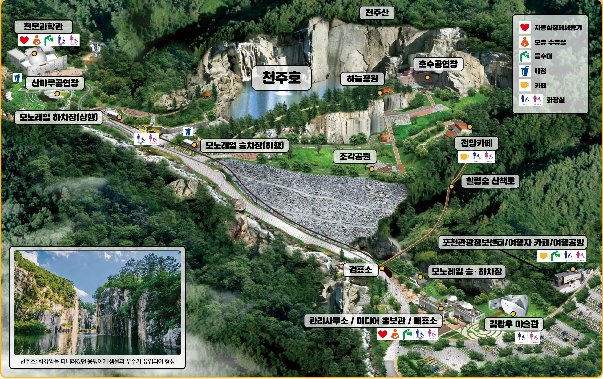

📐 정돈된 통합 마스터 도로망
● 압축율 84% 완료
노드: 170개
도로 구간: 29개
연결성: 100% 무결점
• [🧪 실시간 길찾기 테스트]를 누르고 지도 위 2점을 콕콕 찍어보세요!
• 드래그: 지도 이동 (Pan) | 휠: 확대/축소
• 노드 드래그: 교차점 위치 실시간 미세 조정
• 드래그: 지도 이동 (Pan) | 휠: 확대/축소
• 노드 드래그: 교차점 위치 실시간 미세 조정
